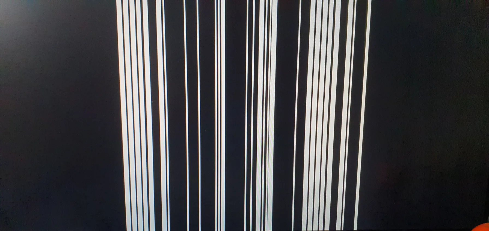
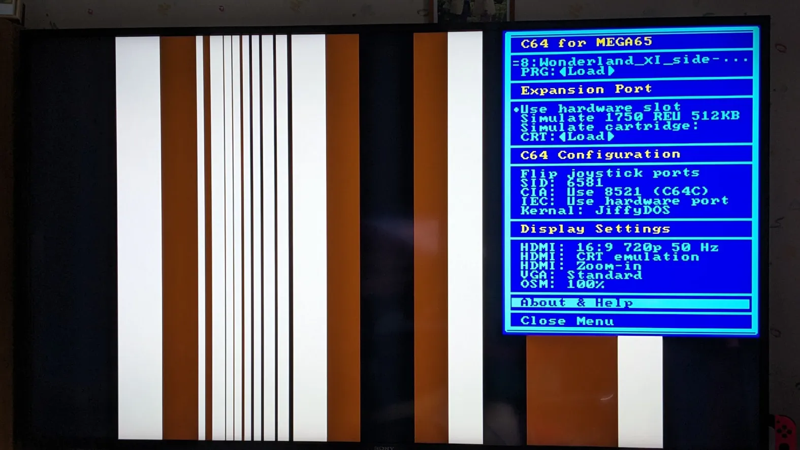

Troubleshooting and FAQ
Overview
This page contains questions and answers that have been brought up by users of the Core over the past two years. Please check the list to the right if you came here for a specific problem.
No picture on connected HDMI display
Please check here
Unsual picture after a Reset (“barcode”)
A small but significant number of users have reported a problem with the C64 Core only showing vertical bars after a RESET or irregularly after a number of minutes. It looks like this:
 This behaviour is limited to R6 boards and is a very specific timing issue with the so-called “HyperRAM” component of the MEGA65. There is a temporary fix available in form of a new Alpha version of the Core. The only change is regarding this specific behaviour, but it can not be ruled out that the fix has negative side effects. If you want to install this version of the Core, please click the following link to download the installation files and follow the usual procedures:
You can also install the released version of the Core and this specific fixed version in different slots of the MEGA65 for comparison.
Do not install this version of the Core unless you repeatedly see those vertical bars.
How do I load a game?
If you have stored C64 software on your SD Card, there are three ways:
- A CRT-file for a cartridge will automatically start after you have mounted it.
- A PRG-file that you loaded will be automatically started if it is a standard program - if it does not autostart, it is either not a full programm (data files often also carry the prg extension) or requires start with a SYS command and a startadress that the Core can not know.
- A D64-file is a mounted disk image. The C64 never autostarted disks. You manually have to load a programm first. Unless several programs are stored on the same disk, please type in the following command:
LOAD "*",8,1
and press RETURN.
The game or demo I selected does start but not run
Please check the following list of potential solutions:
- Is the game/demo compatible with PAL? The Core does not support NTSC-only software.
- Have you turned on the REU emulation? This is not compatible with many games and should usually be switched off.
- Have you tried turning off “HDMI Flicker-Free”? It does help with some very timing-intolerant programs and especially original copy protections.
- Some modern programs require the specific timing of the 8521 CIA. Turn it on by selecting “CIA: Use 8521 (C64C)”.
Not specific to the C64 Core but to any C64 device or emulation:
- Do you have additional devices on the IEC bus? Some programs refuse to run if they see a device #9, #10 and so on.
- Some programs refuse to run when JiffyDOS is active, switch to the standard Kernal.
- Some programs won’t run when loaded as a PRG from a directory on a SD2IEC device. Try mounting it in a .d64 on the SD2IEC or the Core instead (although there also are limits to the compatibility).
- Some copy-protected programs require a real 1541 drive or an exact 1541 emulation. Currently the Core does support a Pi1541-device on the IEC bus (and thinks it is a real 1541). Ultimate64 devices currently do not work. The 1541 emulation in the Core might be upgraded to a similar level of compatibility to these devices in the next version (end of 2025!).
Can the Core run GEOS?
Yes. Please find full instructions here:
Information about Micro SD Cards
Do not use Micro SD Cards larger than 32 GB.
Please make sure that your Micro SD Card has been formatted either by the MEGA65 tool or by the official Micro SD Card formatting software found here for various operating systems:
https://www.sdcard.org/downloads/formatter/
The Operating System of your computer might offer to format “FAT32” but in reality you might get extra files, small other issues and a not 100% compatible card. Also refrain from partitioning the card into several partitions.
Please immediately after formatting the card create a directory called “c64” and copy the Config File called
Please us a good brand-name card like Verbatim or SanDisk. They are really cheap these days anyway.
If you see oddities with your card, your best option is to take a computer, copy all the files off the card, format it, then copy all the files back to the card in order to have a proper file and directory structure.
The screen goes black when I select JiffyDOS
As JiffyDOS is commercial software, it is not included. Please see the section on JiffyDOS.